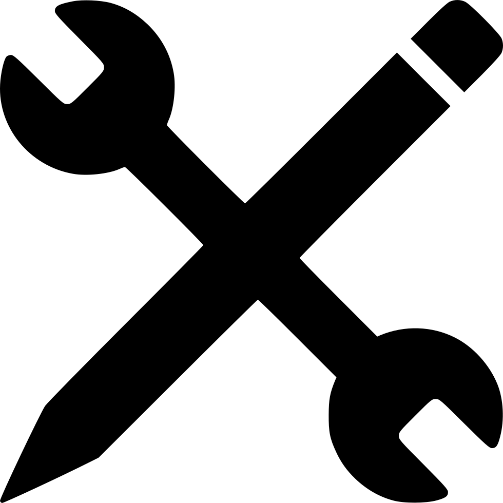

Présentation
Consciencieux, motiver, discipliner je souhaite approfondir mes connaissance théoriques et pratique dans le domaine de l'informatique, je posseder des bases dans le dommaine du developpement, réseau et maintenace informatique.
Formation
- 2019 - 1 er année de Brevet de technicien supérieur - Conception et réalisation de systèmes automatiques
- 2018 – 1 er année de licence de droit et science politique
- 2017 – 1 er année licence mathématique-informatique
- 2016 - Baccalauréat général série scientifique Option science de l’ingénieur
Experience professionelle
Juin 2021-Mars 2022 manœuvre intérim - Marseille

Compétence
- Connaissance outils informatiques
- Changer ou réparer un élément ou un ensemble défectueux
- Configurer le poste de travail aux besoins de l'utilisateur et effectuer les tests de fonctionnement
- Diagnostiquer à distance un dysfonctionnement informatique matériel ou logiciel
- Guider l'utilisateur pour résoudre le dysfonctionnement ou prendre le contrôle du système à distance
- Identifier des ressources nécessaires à la résolution d'un dysfonctionnement

- jules.jeanlouis@gmail.com
- Telephone : 0760110723
- 128 impasse val sec
- Les pennes-Mirabeau